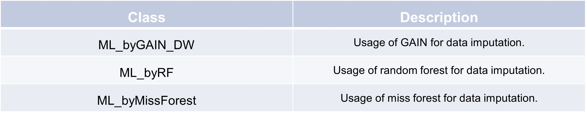

Machine learning error correction
The class usage is exemplary described by using the Random Forest Regressior ML_byRF.
The ML_byRF class implements a machine learning model using a Random Forest Regressor from scikit-learn. This class allows for training, prediction, and model persistence, providing an easy interface for users to apply random forest regression on their datasets.
nr_obs = 6
np.random.seed(0)
# Generate random data
data = np.random.randn(nr_obs, 4)
time_index = pd.date_range(start='2023-01-01 00:00', periods=nr_obs, freq='30T')
# Create DataFrame with specified column names
df = pd.DataFrame(data, columns=["ground_truth", "raw", 'fea_1', 'fea_2'], index = time_index)
df["raw"] = df["ground_truth"] + np.random.normal(0, 5, nr_obs)*np.random.randint(0, 2, nr_obs)
df["isError_gt"] = df["ground_truth"] != df["raw"]
>>> df_fea = df.drop(columns = ["ground_truth"])
>>> df_tar = df["ground_truth"]
>>>
>>> config = TSCC.preprocessing.Config(colname_raw = 'raw')
>>>
>>> class_instance = TSCC.correction.ML_byRF()
>>> class_instance.fit(df_fea, df_tar, "isError_gt", config)
>>> class_instance.predict(df_fea, "isError_gt", config)
2023-01-01 00:00:00 0.837603
2023-01-01 00:30:00 1.867558
2023-01-01 01:00:00 -0.203442
2023-01-01 01:30:00 0.761038
2023-01-01 02:00:00 1.494079
2023-01-01 02:30:00 -1.599811
Freq: 30T, Name: raw_pred, dtype: float64
You can also save the model to your directory and load a model in your file system to a new class instance.